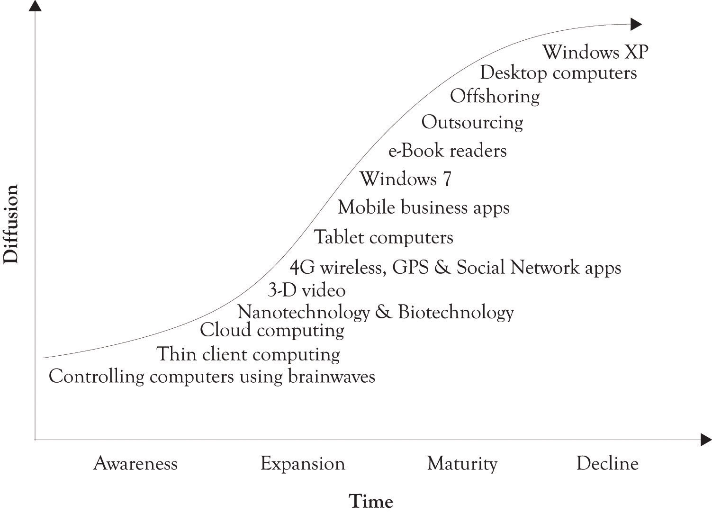
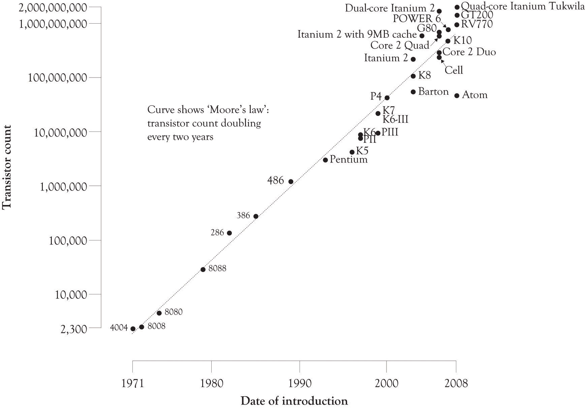
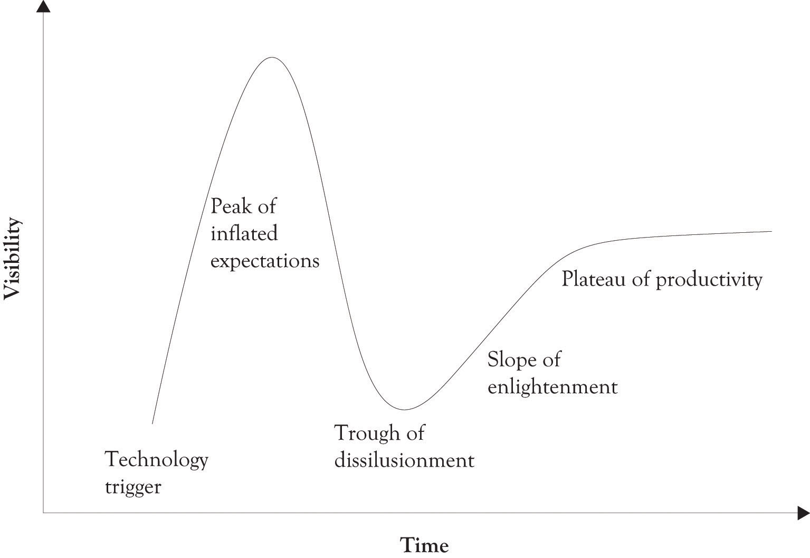
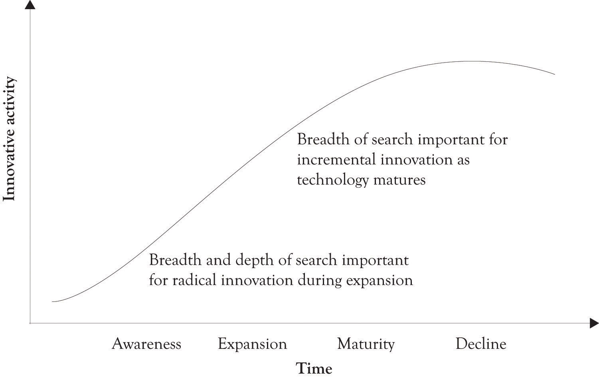

I always like to start class with a pop quiz. It is a good way to get the old gray matter going and stirs up a bit of angst and loathing. There are only three matching questions and they all relate to the dominant types of markets: (1) perfectly competitive marketsMany sellers trading a similar product to many buyers., (2) perfectly monopolistic marketsOne seller trading a similar product to many buyers., and (3) the market hybrid referred to as monopolistic competitionMany sellers trading a slightly differentiated product to many buyers..
| Question 1: Match the market types with their definition | |
|---|---|
| 1. Perfectly competitive market | a. Many sellers trading a similar product to many buyers |
| 2. Monopoly market | b. One seller trading a similar product to many buyers |
| 3. Monopolistic competition market | c. Many sellers trading a slightly differentiated product to many buyers |
If you matched 1 with a, 2 with b, and 3 with c, give yourself one point.
| Question 2: Now match the types of markets with their percentages of total activity | |
|---|---|
| 1. Perfectly competitive market | a. Less than 1% |
| 2. Monopoly market | b. Less than 1% |
| 3. Monopolistic competition market | c. Over 99% |
If you matched 1 with a, 2 with b, and 3 with c, give yourself one point.
| Question 3: Now match the type of market that is easiest to enter | |
|---|---|
| 1. Perfectly competitive market | a. Somewhat easy to enter |
| 2. Monopoly market | b. Very difficult to enter |
| 3. Monopolistic competition market | c. Very easy to enter |
If you matched 1 with a, 2 with b, and 3 with c, give yourself one point.
Give yourself a passing grade if you get above a zero.By the way, I detest pop quizzes. They may work to force people to read the material, but they make learning miserable. Based on the description of the three types of markets, this brief questionnaire illustrates that the best place, and perhaps the only place for entrepreneurs to compete is in markets characterized by monopolistic completion.
Edward Chamberlin published the foundations of monopolistic competition in his 1933 book entitled The Theory of Monopolistic Competition. It is considered by some economists to have the same stature as John Maynard Keynes’s General Theory in revolutionizing economic thought in the 20th century.Brakman and Heijdra (2004). The idea behind monopolistic competition is simple in form and powerful in practice.
Monopolistic competition involves many buyers, many sellers, and easy exit and entry, with slightly differentiated products. The sellers in these markets sell products that are closely related, but not identical. They have features that differentiate them from the competition. Usually, the buyers and sellers also have good information on the attributes of the products and the prices of the products in the marketplace. Indeed, most products and services are sold in markets characterized by monopolistic competition. The list includes jewelry, movie production, food, entertainment, many electronic gadgets and components, some durable goods, books, crafts, soda, houses, cars, consulting businesses, software, game consoles, restaurants, bars, and so forth.
A monopolistA price setter. is a price setter and a business competing in a perfectly competitive market is a price taker. Most businesses strive to be price setters within a certain range of prices by offering a product that is closely related, but not exactly identical to other products in the market. The key strategy for competing in markets characterized by monopolistic competition is to offer products that are differentiated. The products are sort of quasi-substitutes, but they still resemble the original product or service. For example, Apple developed the iPod to compete with existing MP3 players.
According to standard economic theory, a purely competitive market has many buyers and sellers and each individual firm is a price taker. In essence, consumers and producers determine the market price for a product or service. In perfectly competitive markets, there are many sellers and buyers, and entry into and out of the market is easy. In a perfectly competitive market, companies sell their products at prevailing market prices where marginal revenue equals marginal cost. In actuality, every business would like to control the market, set the price, and be a monopolist. All businesses should strive to compete as a monopolist, even if it is in the short term. The goal is to rake in lots of money in the short term because your company is the only seller of a slightly differentiated product or service.An oligopoly is a special case of a monopoly. There are a small number of firms (e.g., 2–8) and they control more than 50% of the market. An oligopolistic market is characterized by low levels of product differentiation and very high fixed costs of entry, where competition is often based on price with elements of both price taking and price leadership. Sample sectors include steel, copper, autos, breakfast cereals, tires, some appliances, and home-care equipment. See McConnell, Brue, and Campbell (2004). This will be short term (unless you have an exclusive patent on a product, own a large oil field, or have exclusive rights to providing cable or utility services) because successful products will always attract the competition. The only way to compete in contemporary markets is to become a serial entrepreneur, to constantly refine and reposition your products, and to function as a near-monopolist in the short term.
The notion of the entrepreneurial enterprise as a monopolist is not new. Indeed, it has a long tradition and history. KirznerKirzner (1973). noted in 1973 that entrepreneurship may be a step to monopoly power. It is possible to acquire market power by adding unique features or services that are not offered by the competition. When the unique features of a product are combined with a well-thought-out production and distribution process and an understanding of the competitive environment, the results are usually positive. This knowledge and the unique knowledge resources are of course transitory, but in the short run they can provide for near-monopoly power.
Entrepreneurship is currently being viewed as a set of skills that are part of a rational and logical process for identifying and creating opportunities.Sarasvathy and Venkataraman (2008). The process and the skills have been likened to learning how to read, write, calculate, and conduct scientific reasoning. Being a successful entrepreneur requires insight and knowledge of problem solving, strategic planning, new product development, project management, and portfolio management among others. An important reason for participating in the entrepreneurial process is that it involves a significant amount of making and building things. This, in turn, leads to learning-by-doing and the creation of new unforeseen opportunities because you have been participating in the entrepreneurial process. Participation in entrepreneurial activity leads to the creation of opportunities in the form of products and services that were not even conceptualized or anticipated in the beginning. The entrepreneurial process actually creates new markets via innovation and product differentiation. Our definition of entrepreneurship focuses on a continuous process for creating new and enhanced products and services.
EntrepreneurshipA risky endeavor involving the continuous creation and re-creation of a new enterprise, a new product, or a new idea. is a risky endeavor involving the continuous creation and re-creation of a new enterprise, a new product, or a new idea.
The origin of the word entrepreneur can be traced to Old French. EntrepreneursIndividuals who undertook risky endeavors such as theatrical productions. were individuals who undertook risky endeavors such as theatrical productions. Risk is an inherent part of entrepreneurship. If there is no risk involved and there is still money to be made, then the endeavor is probably a gift.
Developments in economics, marketing, operations management, and information technology have now brought the vision of customization and personalization to reality.Arora et al. (2008). Consumers want products and services tailored to their personal needs, but they also want products that are standardized, mass produced, and inexpensive. It is possible to assemble products and services using standardized processes and standardized modular components and still achieve product differentiation. Autos, global positioning systems (GPSs), tax software, operating systems, refrigerators, and so forth are all designed so that features and performance can be easily added and subtracted. The key principle in designing products and services is to design for flexibility and to continuously improve those products and services. This is the essence of a product differentiation strategy and the only way to survive under monopolistic competition.
Large companies can be entrepreneurial, but as a company scales up it is difficult to maintain entrepreneurial momentum. For example, several promising employees left Google for the relatively entrepreneurial environment of Facebook.Miller (2010, November 28). This is a natural phenomenon in high-tech enclaves such as Silicon Valley, but there was reason for concern because Google had grown to 23,000+ employees. Google was being viewed as slow and lumbering, too bureaucratic, and too slow to respond to the innovative possibilities of emerging technologies. Google has taken several steps to retain entrepreneurial talent by permitting them to work independently and letting them recruit individuals with relevant skills.
It does not matter if a firm is a gigantic monolithic multinational or a small start-up company manufacturing kazoos or even a mom and pop organization designing and launching Web services. The objective is the same: design products and services that are new and unique, easily differentiable, and adaptable to the needs of consumers. Entrepreneurial guru, blogger, and author Guy Kawasaki describes the situation perfectly:
A great company anticipates what a customer needs—even before she knows she wants it … the key to driving the competition crazy is outinnovating, outservicing, and outpricing … Create a great product or service, put it out there, see who falls in love with it …Kawasaki (2008).
Jeff Bezos, founder and CEO of Amazon.com, and Steve Jobs, the former CEO of Apple, are excellent models of serial entrepreneurship and the differentiation strategy. Many businesses give lip service to the notion of satisfying customers’ wants. Bezos means it. He is a maker of markets, a veritable doer and inventor. Amazon did not have skills in developing electronic books or selling cloud computing, so Bezos embarked on a mission to develop competencies in electronic books and cloud computing. His goal was to satisfy customer needs for books anywhere and computing anywhere at any time at an attractive low price. Bezos even enlisted a Harvard MBA to craft a business plan for the cloud computing initiative. Here is the essence of the Bezos approach for developing new businesses:
Steve Jobs was always an experimenter and a doer. Although some of Apple’s products, such as the Newton, the Lisa, and Apple TV, might be considered failures, he bounced back numerous times and introduced dazzlingly exceptional products that have and still are dominating the market. He is a superb example of an experimenter who sometimes failed in the marketplace, but learned from his mistakes and achieved subsequent success. This is the hallmark of the serial entrepreneur.
Our view of innovation does not require an expensive research lab, but it can. It does not demand a large team of physicists, chemists, engineers, and software developers, but it can. It does not need lots of money, even though it helps. Innovation, as always, just demands hard work and constant attention to searching for new ideas and building things, and is often accompanied by failure. Success is the result of a never-ending process of trial and error and being entrepreneurial.
The two primary categories of innovation are radical and incremental. Radical innovationInnovations that are very different or even revolutionary. They replace existing ideas, products, services, or processes and perhaps lead to markets that were previously nonexistent. tends to replace existing ideas, products, services, or processes. They are innovations that are very different or even revolutionary and they replace existing ideas, products, services, or processes and perhaps lead to markets that were previously nonexistent. Radical innovation can lead to massive changes in an industry and to what is referred to as creative destruction in the marketplace. The internet, the horseless carriage, GPSs, and digital encoding of music and video technology were radical innovations resulting in the development of new markets.
Incremental innovationsInnovations that involve smaller improvements in ideas, products, services, and processes. involve smaller improvements in ideas, products, services, and processes. They are like adding unique features to a product or service. But even incremental improvements can have a radical effect on the marketplace. For example, consider the incremental improvements in wireless phones that eventually lead to the development of Apple’s iPhone and to the numerous smartphone offerings.
Life cyclesSeries of stages though which something passes during its lifetime. are a very useful way to understand how products and technology evolve over time. They are very useful in tracking product and process differentiation. They can be used to understand the evolution, growth, and decline of ideas and phenomena in the physical world, the plant and animal kingdom, and technology. The most commonly used life cycles in business are the technology life cycles and the product life cycles. They are used to track the diffusion of technologies and products.
DiffusionThe acceptance, adoption, and awareness of a technology or a product by individuals. is the acceptance, adoption, and awareness of a technology or a product by individuals. The technology and product life cycles are essentially the same, except the product life cycle is focused on selling products while the technology life cycle is focused on innovation. The technology and product life cycles consists of four phases that follow the classic S-curve and they consist of awareness of the technology, technological growth, technological maturity, and a decline of interest in the technology (see Figure 1.1 "Technology Life Cycle"). Figure 1.2 "Technology Life Cycle Profile in 2011" illustrates a snapshot of where we believe several technologies belong in the life cycle in 2011.
Figure 1.1 Technology Life Cycle

Figure 1.2 Technology Life Cycle Profile in 2011
There are a number of factors that influence the diffusion of products and technology. These factors include whether the technology solves an important problem, how well the public or target market understands the technology, the value versus cost calculation made by consumers, how well the product or technology has been marketed, the effectiveness of the social network in communicating the benefits of the technology, the effectiveness of the supply chain in delivering quality products in a timely manner, and finally, how well the technology performs. Performance is the most important factor influencing diffusion, but it can be trumped by any of these factors. There were nearly a quarter of a million patents granted by the U.S. Patent Office in 2010. There have been nearly 5.2 million patents granted since 1963.Patent Technology Monitoring Team (n.d.). The point is that technology development never stops.
The diffusion and subsequent awareness of a product usually lags increases in product performance (see Figure 1.3 "Diffusion Lags Performance"). This is in part related to Moore’s law. The essence of Moore’s law is that the performance of products increases over time, whereas the cost of the product stays the same or decreases. This increase in performance is a function of technological developments and, of course, the learning curve. The idea behind the learning curveA curve, plotting performance against practice. is that a company or an individual gets better at doing something the more they do it. Moore originally stated the idea in the context of computer-processing power (see Figure 1.3 "Diffusion Lags Performance").
Figure 1.3 Diffusion Lags Performance

Moore is widely known for “Moore’s Law,” in which he predicted that the number of components the industry would be able to place on a computer chip would double every year. In 1975, he updated his prediction to once every 2 years. It has become the guiding principle for the semiconductor industry to deliver ever-more-powerful chips while decreasing the cost of electronics.Moore (n.d.).
Over time, individual firms and the industry become more efficient and the products have better features. The net result is that product performance increases, production capabilities increase, and the cost of production decreases. Increases in product performance are coupled with improvements in manufacturing efficiency and attract more customers. Research and development (R&D) and learning curve effects drive all this.Spence (1981). One of the most important outcomes of the learning curve is that it provides short-term cost advantages to those firms that achieve large market share and additionally creates barriers to market entry. The essence of Moore’s law is that organizations learn by doing. They begin to break down tasks, tasks become specialized, and some tasks are automated. These organizations also begin to develop complementary competencies that are the foundation for new innovations and products.
Some technologies and products fail very quickly because they are simply not effective. Others do not fail initially because of the hype surrounding the product. But they eventually flop because existing customers become disillusioned and communicate their dissatisfaction in a variety of informal and formal communication networks. There are also instances where a product is very useful, yet fails because of inadequate marketing and a problematic supply chain. In all of these instances, the traditional S-curve is not suitable for understanding and illustrating discontinuities in the diffusion and awareness of a new product or emerging technology.
Figure 1.4 Transistor Count and Moore's Law
A very popular approach to understanding growth and diffusion of technologies and products is Gartner’s Hype CycleAn adaptation of the technology life cycle that attempts to deal with discontinuities in adoption..Gartner (n.d.). It is an adaptation of the technology life cycle and attempts to deal with discontinuities in adoption. One of the more interesting features of Gartner’s Hype Cycle is that it takes into account the unbridled and almost euphoric optimism that accompanies the introduction of some technologies and, of course, the inevitable precipitous decline of the next-best thing (see Figure 1.5 "Gartner Hype Cycle"). The Hype Cycle consists of five phases: (1) the Technology Trigger, (2) the Peak of Inflated Expectations, (3) the Trough of Disillusionment, (4) the Slope of Enlightenment, and (5) the Plateau of Productivity.
Another approach to handling the very difficult cross-over between awareness of the technology and massive adoption was developed by Geoffrey Moore.Moore (1999). He uses a bell curve to model technology and adds a couple of cracks or discontinuities in the curve to illustrate the difficult diffusion issues that need to be dealt with when selling high-technology products. He notes that there is a large chasmA marked division, difference, or separation. that has to be crossed when a technology transitions from emerging and glitchy technology to productive, easy-to-use, and readily applicable to solving problems. The early adopters of an emerging technology are usually more willing to put up with the glitches than the masses. Technologies and products that are not capable of making the transition fade into the chasm.
Figure 1.5 Gartner Hype Cycle
We have adapted the Hype Cycle model and the chasm approaches and integrated them into the traditional S-curve that is used to model the technological life cycle. As illustrated in Figure 1.6 "Crossing the Bridge of Hope and Climbing the Bridge of Adversity", there is often a crisis of adoption as a technology begins to transition from awareness to expansion. There is a major bridge to be crossed where attention to design and marketing and performance are critical. It is the Bridge of Hope. If the performance of the technology is inadequate or the technology falls off of the public’s radar, then there is a diffusion crisis, and the technology can fall into the chasm and become irrelevant. It is possible to crawl out of the chasm with better product design, an influx of resources, and better marketing, but it is a difficult climb out of the abyss. The climb out of the abyss is over the Bridge of Adversity. Companies that have invested in emerging technologies are forever hopeful that they can cross the abyss from relative obscurity to expansion and reap the monetary rewards derived from the expansion of the marketplace.
Figure 1.6 Crossing the Bridge of Hope and Climbing the Bridge of Adversity

In some ways, technological change is similar to evolutionary change. Some technologies are simply eclipsed by other technologies and fade or die away, such as in the case of the horse and buggy giving way to the Model T and analog TVs succumbing to digital TVs. Sometimes, technologies evolve through subtle differentiation such as the case with cell phones, GPS devices, and operating systems. There are instances where major mutations take place when two different technologies are combined such as in the case of the merging of GPS, cell phones, MP3 players, and Web 2.0 social networking.
In many instances, technology does not just die out or become obsolete, it just becomes part and parcel of a new technology. One of the early partitioning and time-sharing and operating systems, IBM’s VM370, was developed in the 1960s and 1970s. The concepts developed for the VM370 operating systems are the foundation for many existing operating systems, including UNIX, Linux, and all of Microsoft’s products, as well as the current crop of the so-called virtual machine applications. The cloud-computing concept is actually an extension of the IBM’s VM370 architecture. Thin client computing, where a significant part of the processing is done on a central server, was touted as the next big technology in the early 1990s. It faded for a while and then has reemerged as an important concept with the emergence of cloud computing.
Metcalfe’s lawThe value or utility of a network is proportional to the number of users of the network. states that the value or utility of a network is proportional to the number of user’s of the network. At one time, Metcalfe indicated that utility was a square function (utility = n2). For example, a phone network with 10 people has a utility of 100 and a network with 100 people has a utility value of 10,000. He has since scaled that back and the utility of a network is based on a log function (utility = n × log(n)).VC MIKE (2010). The log model is presented in Figure 1.7 "The Size of the Network Increases the Value of the Network". Thus, for a 100-user network, this would translate to utility = 100 × 2 = 200 or 200 utility units. The equation is not the important issue. It is the idea that if you have more people using a phone, a fax, railroad, a Web 2.0 application or whatever, your network will become more attractive and attract even more users. Consider the choice to go with a local cable TV network or a satellite TV network. If individuals take into account what network other people are choosing, then there is a network externality or a network effect that influences the decision.
In the economics literature, a network effect typically refers to a change in the positive benefit that a consumer receives from a good, when the number of consumers of the good increases.Liebowitz and Margolis (1994). Network effects are not limited to phone, wireless, and telecommunications networks. They can also include the following:
Figure 1.7 The Size of the Network Increases the Value of the Network
Economists also talk about network failuresA situation where the technology or network selected is not the best technology, thus leading consumers and business down a path that is not optimum.. That is a situation where the technology or network selected is not the best technology, thus leading consumers and business down a path that is not optimum. In reality, consumers are often very aware of the trade-offs in performance that exists between competing technologies. Take the case of the success of the VHS recording format over the Beta format. The success of VHS is often touted as an example of network failure. The picture quality of the VHS format was, in fact, reasonably close to the quality of the Beta format.Liebowitz and Margolis (1994). In addition, the VHS tapes had a greater capacity and cost less than the Beta tapes. It was not a failure of the market to recognize the superiority of Beta; it was rather that consumers revealed their preferences for certain features by purchasing the VHS format.
The best of all worlds is when the stars are aligned properly and an organization can realize network effects and take advantage of Moore’s law by increasing the performance of a product while reducing or maintain costs. The net result is to spur hypergrowth in the diffusion and sales of a product or service.
The objectives of R&D are to develop existing and new core competencies, to further existing and new products, and to develop existing and new business processes through invention and innovation.Matheson and Matheson (1998). The R&D process is the engine that drives product and process differentiation. InnovationThe ideas, products, services, or processes that are perceived as being new and different and that have been implemented or even commercialized. is typically defined as the ideas, the products, the services, or processes that are perceived as being new and different and they have been implemented or even commercialized.
Research and development are usually thrown together as one concept, but in reality they are somewhat distinct processes.Annacchino (2006). ResearchTypically considered to be science-oriented. is typically considered to be science-oriented whereas developmentThe mechanism for translating the science of research into commercial products and services. is the mechanism for translating the science into commercial products and services. Basic science can be thought of as the engine for pushing new discoveries and ideas into society. This is in contrast to the concept of market pull. Market pullThe process of translating the basic science into products and services in order to satisfy customer needs, wants, and demands. is essentially the process of translating the basic science into products and services in order to satisfy customer needs, wants, and demands. The interaction between science push and market pull creates a very powerful feedback loop that spurs on the development and diffusion of new products and services.Schmoch (2007).
As noted earlier, the diffusion and awareness of technologies typically follows an S-curve. In the early stages of the S-curve, there are very few people aware of the technology. Market research is not important at this stage because there are few untapped wants because of the lack of awareness. As a technology matures and begins to take off, there is a propagation of awareness with increased insight of the possibilities of a technology.Goldenberg and Mazursky (2002). It is at this stage that market research becomes viable. It is also at this stage that many similar products begin to emerge because of the surfacing of a kind of group aha because of the interconnectedness of businesses and research groups. This group aha occurs because market research by producers and product development laboratories leads to the same conclusions about consumer wants. Once consumers begin to use products and have had the opportunity to experience a product, they also begin to identify areas of deficiencies in the product and areas where a feature might be added. And this is where market research is very effective because market researchers are very adept at identifying changes in consumer wants.
As the market matures, the demand for the products also begins to decline with the emergence of substitute products and technological obsolescence. It is then necessary to re-prime the pump and reload science. This is done by working with new science and new technologies in order to identify new opportunities for developing products and services. Figure 1.8 "Push, Pull, and Reload" illustrates the concepts of science push and market pull and how they relate to diffusion and awareness.
Figure 1.8 Push, Pull, and Reload
Some individuals believe that there is a limit on the ability of innovative activities to bring new products to the market. This suggests that differentiation cannot go on forever. This line of reasoning is similar to the idea attributed to someone in the U.S. patent office that: “Everything that can be invented has been invented.” There is good news, however, from the patent office. Research has shown that companies can keep innovating and still contribute to the bottom line because it appears that, in general, there are no diminishing returns to scale for R&D expenditures.Madsen (2007). In essence, continued investment in R&D yields rewards, revenues, and profits. Even though a particular technology may have a performance limit, advances in R&D and in basic science along with customer pull will start the process anew. Moore’s law continues to work for Intel because they continuously re-prime the pump. They have gone from focusing on the clock rate of their CPU, which is constrained by thermodynamic considerations, to exploring multiple CPU cores and restructuring the overall microarchitecture of their chips.
For the entrepreneur, there is significant overlap related to research, product development, and the actual production of products and services. Many organizations are just too small to become involved in basic research and they have to rely on combining existing and emerging technologies in creative ways. Entrepreneurs view R&D as interdependent processes that are intertwined and not very distinct. For the entrepreneur, research and product development includes:
Our focus in this book is primarily on the first four steps including idea generation, gathering information, preliminary design, and prototyping. From the standpoint of the entrepreneur, these steps are the essence of R&D. Steps 5 and 6 are part of product engineering and they will not be discussed in depth.
In addition to generating new knowledge, conducting R&D leads to smarter organizations because the knowledge these organizations already have helped understand new information when it becomes available. The best way to conduct R&D and to improve the organizational innovation and creativity is to learn-by-doing and to engage in search activity. In this section, we will discuss searching for ideas first and we will discuss learning-by-doing later.
Learning-aboutAcquiring knowledge and integrating and synthesizing that knowledge., or the search process, involves reading magazines, books, and technical articles, attending schools, observing the competition, one-on-one discussion, interacting with customers, and attending symposia and conferences. It involves acquiring knowledge and integrating and synthesizing that knowledge. This is the first step in developing individual and organizational knowledge structures. Learning-about in its basic form is search and synthesis. It is too expensive in terms of time and resources for organizations to build every product and service that is conceived. Many companies therefore learn-about an idea by reading, interacting with experts, and also by attending symposia and conferences related to an emerging technology. The goal is to gain insight and understand the potential of an emerging technology or a new idea.
It is our thesis that book learning, lectures, and even homework are usually beneficial. This is essentially the learning-about process. Search plays a key part in the learning-about process. This is particularly true when an organization searches outside the organization for ideas related to product innovation. Search can be classified in terms of the breadth and depth of the search.Laursen and Salter (2006). The breadth of the search refers to the number of outside sources used and consulted. The depth of search refers to the intensity of the relationship between the searcher and the external sources. Table 1.1 "External Sources of Information" lists potential sources of external information that can be used by entrepreneurs and product developers when engaging in an innovative activity.
As illustrated in Figure 1.9 "Breadth and Depth of Search and Innovative Activity" (adapted from Laursen and SalterLaursen and Salter (2006).), it appears that the breadth of search is important for incremental improvements innovation and that both breadth and depth of search are important for new and radical innovation. In terms of the breadth of the search, it appears that the sweet spot is about eleven sources plus or minus two sources (see Figure 1.10 "Breadth of Search and Innovative Performance", adapted from Laursen and SalterLaursen and Salter (2006).). This is a rather useful finding upon further reflection. When searching for new information, it is often difficult to determine how much information to gather and the number of sources for collecting information in order to avoid information overload. The point is that you have to seek out a variety of sources of information in order to improve the chances of introducing a successful innovation.
Table 1.1 External Sources of Information
| Sources of information from the market |
| Suppliers of equipment, materials, components, or software |
| Clients or customers |
| Competitors |
| Consultants |
| Commercial laboratories/R&D enterprises |
| Sources of information from institutions |
| Universities or other higher education institutes |
| Government research organizations |
| Other public sectors, e.g., business links and government offices |
| Private research institutes |
| Sources of information from the profession |
| Professional conferences and meetings |
| Trade associations |
| Technical/trade press and computer databases |
| Fairs and exhibitions |
| Sources from specialized places |
| Technical standards |
| Health and safety standards and regulations |
| Environmental standards and regulations |
Source: Laursen and Salter (2006).
Figure 1.9 Breadth and Depth of Search and Innovative Activity
Figure 1.10 Breadth of Search and Innovative Performance

Learning-by-doingThe organization or entrepreneur makes and builds things, conducts experiments, and builds prototypes. means that the organization or entrepreneur makes and builds things, conducts experiments, and builds prototypes. R&D is essentially learning by doing. Individuals and organizations benefit from learning-by-doing because it builds up absorptive capacityThe result of having already developed insight in a particular domain. An individual or organization can understand, assimilate, transfer, and exploit new knowledge and then apply it to solving problems and developing commercially viable products..Cohen and Levinthal (1990). Absorptive capacity is the result of having already developed knowledge and insight in a particular domain, for example, in medicine, baseball, networking, or memory chips. Having absorptive capacity means that prior knowledge facilitates the learning of new knowledge. Developing absorptive capacity is synonymous with developing insight. It gives an individual or an organization the ability to understand, assimilate, transfer, and exploit new knowledge and new information as it becomes available and then to apply it to solving problems and developing commercially viable products. Learning-by-doing is essentially design and development.
The key activity for innovative activity is the learning-by-doing process. Learning-by-doing means that you make and build things, try experiments, and construct prototypes. Sometimes, there is a facilitator, such as a teacher, a project manager, colleagues, a fellow student, a book, or a YouTube video, to get you started on the path to creativity.
Roger Shank is a well-known expert on artificial intelligence, learning, and knowledge. He has been on a crusade to change the way kids are taught. He wants children to learn by doing and engage in more experimentation and reflection and spend less time on being tested on the so-called “body of knowledge that everyone must know.”Schank and Cleary (1995), p. 74.
If you want to learn to throw a football, drive a car, build a mouse trap, design a building, cook a stir fry, or be a management consultant, you must have a go at doing it. Throughout history, youths have been apprenticed to masters in order to learn a trade … Parents usually teach children in this way. They don’t give a series of lectures to their children to prepare them to walk, talk, climb, run, play a game, or learn how to behave. They just let their children do these things. If he throws poorly, he simply tries again. Parents tolerate sitting in the passenger seat while their teenager tries out the driver’s seat for the first time. It’s nerve-racking, but parents put up with it, because they know there’s no better way.… When it comes to school, however, instead of allowing students to learn by doing, we create courses of instruction to tell students about the theory of the task without concentrating on the doing of the task. It’s not easy to see how to apply apprenticeship to mass education. So in its place, we lecture.
R&D is essentially learning-by-doing. Individuals and organizations benefit from learning-by-doing in the context of R&D because it builds up absorptive capacity.Cohen and Levinthal (1990). Absorptive capacity is simply a function of having previously developed knowledge structures in a particular domain (e.g., domain knowledge in medicine, baseball, networking, or memory chips). It gives an individual or an organization the ability to understand, assimilate, transfer, and exploit new knowledge and information and then to apply it to solving problems and developing commercially viable products.
Differentiation should be the engine driving the business, but businesses must also attend to improving the supply chain and the brand in order to succeed. Improving the supply chain and improving the brand image are also methods for product differentiation. They contribute to the unique bundle of perceptions that customers have towards a business.
The supply chainThe creation of a product or service up through the delivery of the product to the customer. is the connected activities related to the creation of a product or service up through the delivery of the product to the customer. It includes the upstream suppliers as well as downstream activities such as wholesalers and distribution warehouses and after sales support.In general, the terms value chain and supply chain can be used interchangeably, although the value chain is rooted in the strategic planning literature whereas the supply chain is linked to the work in the operations management area. Key activities for improving the supply chain are to reduce transaction costs to improve business processes. Consumers often perceive efficient and responsive supply chains as an attribute or a product feature.
The brandThe image of a product or service in the marketplace. is the image of a product or service in the marketplace. Consumers essentially perceive the brand as being a feature of the product and, in many instances, it is viewed as the avatar for the product. Images and visions are immediately invoked when mentioning Apple, or Amazon, Google, Wal-Mart, and Disney. Our focus in this book will be on the process of innovation and differentiation, but we also recognize that successful companies must attend to improving the supply chain and developing a strong brand.
In this chapter, we have introduced many of the fundamental concepts related to understanding differentiation and the diffusion of innovations within the context of monopolistic competition. The key points are the following:
This chapter has illustrated the foundational concepts for competing in the current marketplace. Subsequent chapters will build on this foundation and present additional details on how to accomplish differentiation and innovation through product and services versioning.